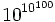
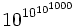

What is Infinity?

| Infinity ... | |
| ... it's not big ... | |
| ... it's not huge ... | |
| ... it's not tremendously large ... | |
| ... it's not extremely humongously enormous ... | |
| ... it's ... |
Infinity has no end
Infinity is the idea of something that has no end.
In our world we don't have anything like it. So we imagine traveling on and on, trying hard to get there, but that is not actually infinity.
So don't think like that (it just hurts your brain!). Just think "endless", or "boundless".
If there is no reason something should stop, then it is infinite.
Infinity does not grow
Infinity is not "getting larger", it is already fully formed.
Sometimes people (including me) say it "goes on and on" which sounds like it is growing somehow. But infinity does not do anything, it just is.
Infinity is not a real number
Infinity is not a real number, it is an idea. An idea of something without an end.
Infinity cannot be measured.
Even these faraway galaxies can't compete with infinity.
Infinity is Simple
Yes! It is actually simpler than things which do have an end. Because when something has an end, we have to define where that end is.

Example: in Geometry a Line has infinite length.
A Line goes in both directions without end.
When there is one end it is called a Ray, and when there are two ends it is called a Line Segment, but they need extra information to define where the ends are.
So a Line is actually simpler then a Ray or Line Segment.
More Examples: |
|
|
{1, 2, 3, ...} |
The sequence of natural numbers never ends, and is infinite. |
|
OK, 1/3 is a finite number (it is not infinite). But written as a decimal number the digit 3 repeats forever (we say "0.3 repeating"): 0.3333333... (etc) There's no reason why the 3s should ever stop: they repeat infinitely. |
|
| 0.999... |
So, when we see a number like "0.999..." (i.e. a decimal number with an infinite series of 9s), there is no end to the number of 9s. You cannot say "but what happens if it ends in an 8?", because it simply does not end. (This is why 0.999... equals 1). |
| AAAA... |
An infinite series of "A"s followed by a "B" will NEVER have a "B". |
| There are infinite points in a line. Even a short line segment has infinite points. | |
Big Numbers
There are some really impressively big numbers.
A Googol is 1 followed by one hundred zeros (10100) :
10,000,000,000,000,000,000,000,000,000,000,000,
000,000,000,000,000,000,000,000,000,000,000,
000,000,000,000,000,000,000,000,000,000,000
A Googol is already bigger than the number of elementary particles in the known Universe, but then there is the Googolplex. It is 1 followed by Googol zeros. I can't even write down the number, because there is not enough matter in the known universe to form all the zeros:
10,000,000,000,000,000,000,000,000,000,000,000,000, ... (Googol number of Zeros)
And there are even larger numbers that need to use "Power Towers" to write them down.
For example, a Googolplex can be written as this power tower: 
That is ten to the power of (10 to the power of 100),
But imagine an even bigger number like  (which is a Googolplexian).
And we can easily create much larger numbers than those!
Finite
All of these numbers are "finite", we could eventually "get there".
But none of these numbers are even close to infinity. Because they are finite, and infinity is ... not finite!
Using Infinity
We can sometimes use infinity like it is a number, but infinity does not behave like a real number.
To help you understand, think "endless" whenever you see the "∞":
Example: ∞ + 1 = ∞
It says that when something is endless, we can add 1 and it is still endless.
But be careful with ∞ in equations!
Let us try to subtract ∞ from both sides:
Oh no! Something is wrong here.
In fact ∞ − ∞ is undefined.
To avoid such mistakes:
Imagine every ∞ has a different value
We don't know how big infinity is, so we can't say two infinities are the same:
Example: Even Numbers
The set of natural numbers {1, 2, 3, ...} can be matched one-to-one with the set of even numbers {2, 4, 6, ...} like this:

Both sets are infinite (endless), but one seems to be twice as big as the other!
Properties
The most important thing about infinity is that:
-∞ < x < ∞
Where x is a real number
Which is mathematical shorthand for
"negative infinity is less than any real number,
and infinity is greater than any real number"
Here are some more properties:
| Special Properties of Infinity |
|---|
| ∞ + ∞ = ∞ |
| -∞ + -∞ = -∞ |
| ∞ × ∞ = ∞ |
| -∞ × -∞ = ∞ |
| -∞ × ∞ = -∞ |
| x + ∞ = ∞ |
| x + (-∞) = -∞ |
| x - ∞ = -∞ |
| x − (-∞) = ∞ |
| For x>0 : |
| x × ∞ = ∞ |
| x × (-∞) = -∞ |
| For x<0 : |
| x × ∞ = -∞ |
| x × (-∞) = ∞ |
Undefined Operations
All of these are "undefined":
| "Undefined" Operations |
|---|
| 0 × ∞ |
| 0 × -∞ |
| ∞ + -∞ |
| ∞ - ∞ |
| ∞ / ∞ |
| ∞0 |
| 1∞ |
Example: Is ∞∞ equal to 1?
No, because we can't say that two infinities are the same.
For example ∞ + ∞ = ∞, so
| ∞∞ = ∞ + ∞∞ | ||
| which looks like: | 11 = 21 | |
And that doesn't make sense!
So we say that ∞∞ is undefined.
Infinite Sets
If you continue to study this subject you will find discussions about infinite sets, and the idea of different sizes of infinity.
That subject has special names like Aleph-null (how many Natural Numbers), Aleph-one and so on, which are used to measure the sizes of sets.
For example, there are infinitely many whole numbers {0, 1, 2, 3, 4,...},

But there are more real numbers (such as 12.308 or 1.1111115) because there are infinitely many possible variations after the decimal place as well.
Or think of it this way: unlike integers, we can always discover new real numbers in-between other real numbers, no matter how small the gap.
But that is an advanced topic, and goes beyond the simple concept of infinity we discuss here.
Conclusion
Infinity is a simple idea: "endless". Most things we know have an end, but infinity does not.